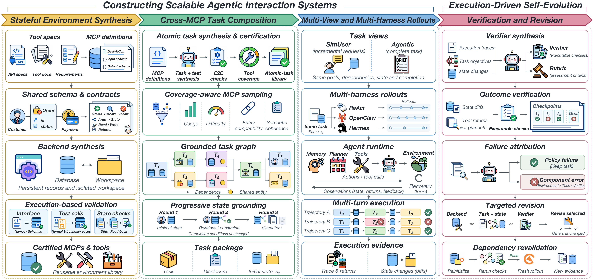
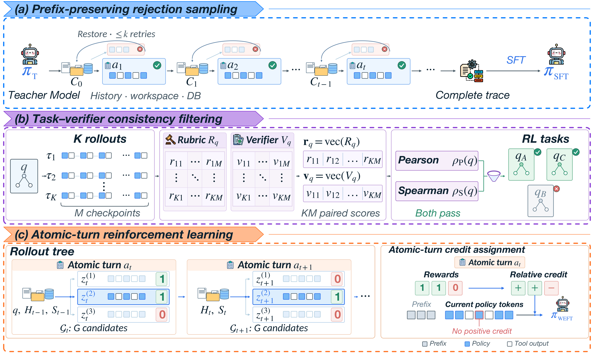

核心判断：WEFT 将工具说明、共享实体、可执行 DAG 和 verifier 组成可训练 workflow；失败 rollout 同时用于策略学习和诊断 environment/task/harness/evaluator。训练时回滚失败局部、保留成功前缀，并在相同 history/state 的候选之间分配 atomic-turn credit。
问题与动机
‘工具能调用’不等于任务监督可靠；完整轨迹拒绝采样会丢掉前面已完成的进度，粗粒度 reward 又难做 credit assignment。
方法框架
- 用三类 certification checks 验证实体绑定、可达性和终态；跨 MCP 组合 atomic tasks。
- execution-driven self-evolution 通过 fresh rollout 区分 policy、环境、任务和 verifier 失败。
- prefix-preserving rejection sampling 恢复 history 与 state；RL 在同一 starting point 上计算局部 group-relative advantage。
实验与核心结论
- WEFT-8B/14B 的 aggregate scores 为 52.28/62.21，在 matched-size environment-scaling 对照中有明确收益。
- 35B 并非所有指标都更强；原表有三个 aggregate scores 低于 Qwen3.5-35B-A3B。
- MegaMCP 节省上传和常驻进程内存，但在预热本地服务的 1,000-task 对照中延迟更高。
WEFT 总体框架

训练与 credit

价值与边界
WEFT 的贡献在于把任务生成、执行证据、数据回滚和局部 credit 串成一条工程链；其 attribution agent 和大模型基线仍缺少独立消融。